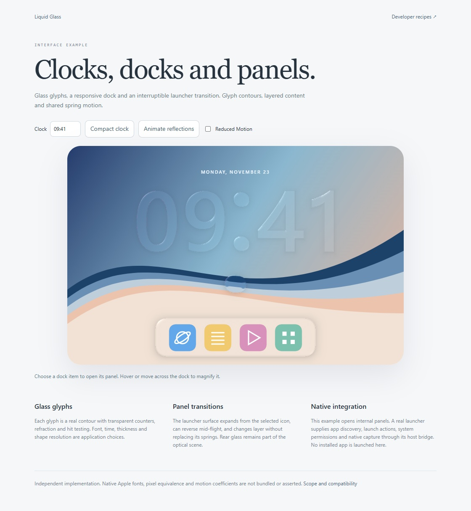
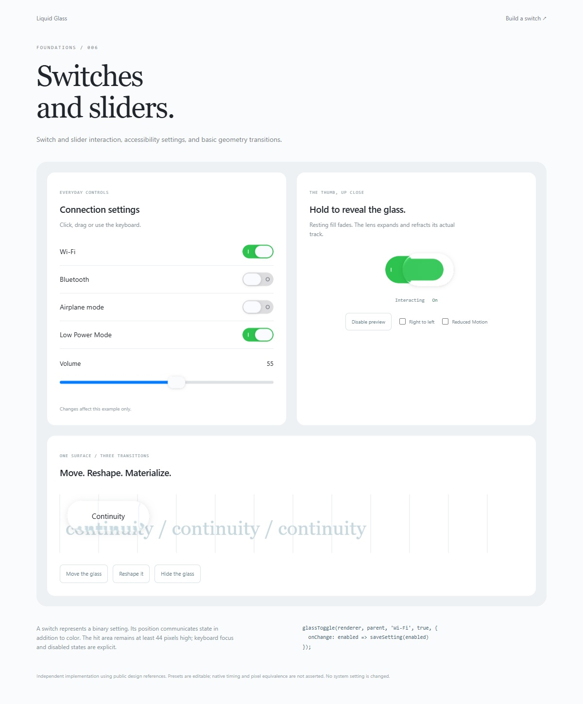
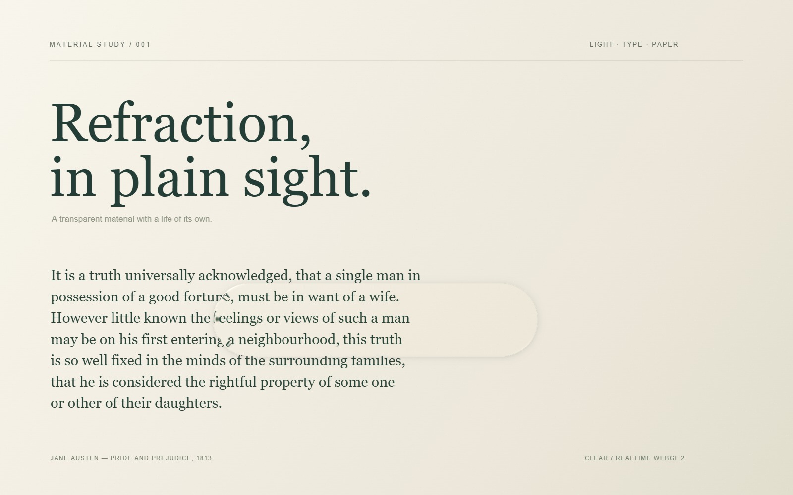
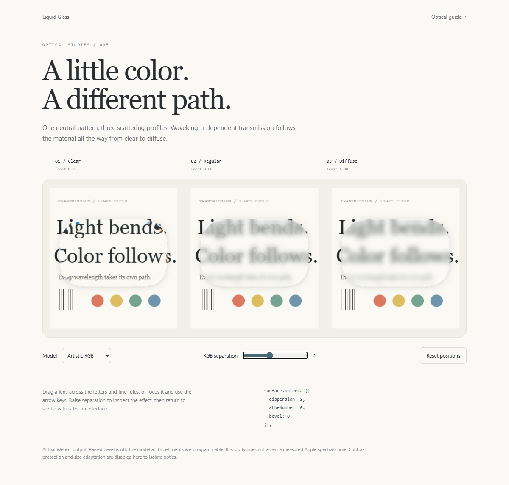

Clocks, docks and panels
Glyph contours, dock magnification and reversible launcher transitions.
Interactive scenes for refraction, layered content, controls and motion. Each demonstration uses the current library build.

Glyph contours, dock magnification and reversible launcher transitions.

Switch and slider interaction, accessibility and basic transitions.

Paper, typography and free contours.

Artistic and wavelength-dependent transmission, with and without scattering.